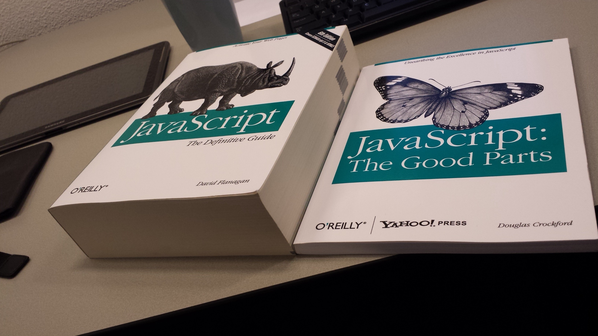

26 December, 2019
The World Wide Web is dead.
Sorry, Time Berners-Lee. Your dream of a decentralized web has not come to be with the World Wide Web. The domain name system is now controlled by a handful of companies and most internet users are using entirely centralized platforms in the form of social media, search engines, and SaaS subscriptions.
Unfortunately, the current make-up of the web is largely centralized. This means that we all congregate in a central place where a single entity controls everything in that place. On the internet, almost every popular service is centralized from YouTube to Facebook to Netflix.
The main issue with centralization is consolidation of power. YouTube controls the platform. They make all the decisions and can choose to limit user freedom however they wish. They choose the layout, the styling, the recommended content, and most importantly, who can and who can't use the platform.
The second issue with centralization is the consolidation of information. Facebook controls all the buttons and all the web forms. This makes data mining a simple task. Everything they may want to capture can easily be identified for use in algorithms, automating the process. Not only do you have to trust Facebook not to share information with others, they also store this information in a centralized location which a security concern. This consolidation of information makes centralized servers with sensitive data prime target.
In general, centralized platforms disporportionally benefit the central power. The companies.
Contrast this with a decentralized protocol like email or internet relay chat (IRC). Everybody can use it. If you don't like the features offered by one client, you can choose another, or even build your own if you know how. You can choose one that looks the coolest or one that doesn't collect information about you or one with the tighest security. You can do all of this without missing out on the central service or content offered by it.
Alternatively, we can look at federated networks like Fediverse consisting of Mastodon, PeerTube, Diaspora, and PixelFed, among others. Federation can allow instances. Each instance can set their own rules in order to cultivate the type of community that they want. Then, all these instances or community can interact with one other within the larger network.
This distrubution of power means there is no single point of failure and users have more freedom about how they interact with the service. It also allows information to be distributed among various entities preventing .
A handful of companies should not exist as gatekeepers to the internet. These gatekeepers come in the form of ISPs, search engines, domain name system (DNS) registarts, and more recently centralized social hubs like YouTube and Facebook. This is the main challenge to be addressed by an open web.
ISPs, being the first gatekeepers, are a big issue, but won't be covered in-depth in this article. This is mostly about the currently flawed structured of DNS.
For those unaware of how DNS works, a website is hosted on a server with an IP address. This web server can then be connected to the internet (which is just a giant of interconnected network of servers and devices). Anybody with an internet connection who knows your IP address can access your site. Since remembering individual IP addresses is too difficult, we give them names which redirect to the IP addresses using DNS servers which contain a list of domain names and their corresponding IP address. For example, you can access DuckDuckGo via their domain duckduckgo.com or their IP address 176.34.131.233.
The current structure of the domain name system exists so that companies, called registries can own top-level domains such as .com if approved by the nonprofit ICANN. Then other companies can own the rights to domain names of which users can access and buy. But this doesn't give you full control. Your DNS registrar such as GoDaddy or NameCheap still owns the domain name, they're just letting you use it. This means that they can move it or take it away from you.
This has to change. Users should have full control over their domains meaning they should be the sole owners.
Blockchain domains can solve this issue. Blockchain is a distributed technology that stores records on a "blockchain" and links them all cryptographically. Your domain is an asset on the blockchain that can be accessed by anyone, but only controlled by you. It sits in your digital wallet and websites associated with it can only be changed with a passphrase or keyfile. However, rather than the domain redirecting to an IP address, it would redirected to associated wallet address where the web server is stored. The result is a website that only you can put up and only you can take down.
Centralized content hubs can be addressed by strong open web protocols.
Phone numbers and even email addresses have become somewhat of an antiquated concept. Email, IRC, and SMS are security nightmares. Indepedent chat applications are the most secure and most feature-rich, but they have a big problem. None of them work with one another! If I have one friend who uses Telegram, another who uses WhatsApp, and another who uses Signal, then I need three apps. No thanks!
Future communication protocols should seek to erase email, irc, sms, and chat apps altogether. Messages should be end-to-end encrypted by default (sorry world governments, privacy is not a good trade-off for """security""""!). Everyone should have their own unique identifier, a username. People should be able to use whichever front-end chat client to interface this protocol they choose and they should be to communicate with any regardless of which client they may choose.
XMPP and Matrix are the closest examples of this.
Imagine a decentralized content platform where creators had full control over their content. All their information and content added to a distributed blockchain ledger, controlled by no one but them. They're the only ones who can remove their content from the platform. Imagine this with no fees to a middle man for hosting their content (as with Amazon, YouTube, Spotify).
Creators can upload videos, music, documents, and e-books. With monetization built-in, viewers can choose to "tip" their favorite creators, with creators receiving 100% of that tip. Creators can also choose to paywall certain forms of content, with access being withheld to only users who pay. Viewers can, again, select their client of choice. Perhaps, there may even come to be clients that specialize in amateur videos such as YouTube, movies such as Netflix, music such as Spotify, or ebooks such as Amazon.
All content is DRM-free on a platform with no ads.
This is a digital marketplace. This is LBRY.
If you read my social media bad article, you know that I am no fan of social media. But I actually think social media can be done well, if a few criteria can be met first. The biggest problems with social media are the massive invasions of privacy, the like button reinforcing human ego, and advertisements. With this in mind, any new social media should have the following traits:
One social media that does really well with most of these is Mastodon, a federated & decentralized microblogging platform similar to Twitter. However, I believe Mastodon still records the number of toots (shares) and favorites.
Everyone should have their own website!
Web hosting and implementing solutions for blogs should as simple as setting up a medium or write freely account.
Recommendations should be human-based, not algorithm-based with everyone having a page of links to their favorite sites. Switching between dark and light mode should be easy no matter the site. Content on these sites should be distributed via RSS, Atom), or a similar standardized syndication techonology.
Oh, and no more JavaScript!
Client-side scripting in web browsers is cancerous enough, but at least have a better "web" language. Maybe one without numerous security vulnerabilities like SQL injection and cross-site scripting.
The World Wide Web has become a corporate cesspool. A new web should be made that ensures decentralized, security-focused protocols, encorporating blockchain technology to do so.